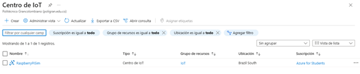
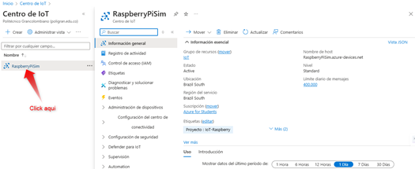
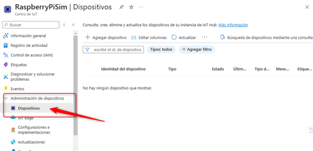
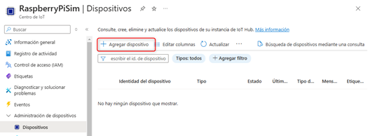
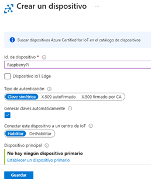
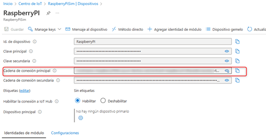

La simulación de Raspberry Pi con Azure IoT permite experimentar con dispositivos virtuales conectados a la nube sin necesidad de hardware físico. Utilizando el simulador en línea de Azure, los usuarios pueden realizar pruebas y experimentar con la plataforma IoT de una manera sencilla y accesible, ideal para principiantes en el Internet de las Cosas (IoT). Esta guía se basa en la documentación oficial de Azure y tiene como objetivo ser clara y comprensible para los hispanohablantes, mostrando cómo configurar el hardware virtual, conectar con Azure IoT Hub y visualizar los datos generados en tiempo real. El simulador es una herramienta perfecta para quienes desean explorar las capacidades de Azure y Raspberry Pi sin complicaciones.
Espacio de trabajo en el centro de IoT Regresando al Centro de IoT, veremos el espacio de trabajo que hemos creado. Solo necesitamos hacer clic sobre él para acceder y empezar a configurar:
.El siguiente paso es configurar el dispositivo Raspberry Pi. Para ello, nos dirigimos a la sección de administración de dispositivos y seleccionamos "Dispositivos".
 Agregamos, un nuevo dispositivo, asignándole un nombre y luego guarda la configuración. Después de unos segundos, el dispositivo se agregará y estará disponible en el sistema, listo para comenzar con las pruebas y configuraciones adicionales. Creación del dispositivo Raspberry Pi Sim en él entorno Solo debemos dar en este sitio agregar nuevo dispositivo, como se aprecia la imagen
Concluimos la creación dando guardar
Hacemos clic sobre él y accedemos
